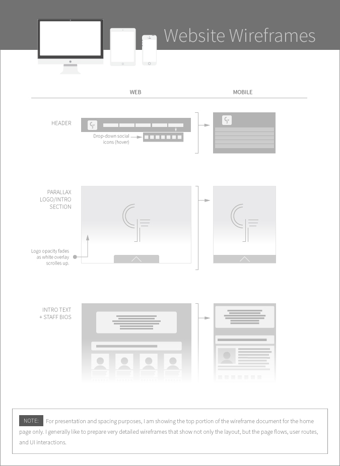

Christ Fellowship Ministries
Fresh branding and a new website for this expanding US based ministry.Christ Fellowship Ministries is a church with a world-wide vision, a vibrant and engaged congregational body, and a strong family orientation. With two US locations and one in France, this ministry is positioned for growth, both internally, and in the scope of it’s outreach ministries.

- 
Note: For presentation and spacing purposes, I am showing the top portion of the wireframe document for the home page only. I generally like to prepare very detailed wireframes that show not only the layout, but the page flows, user routes, and UI interactions.